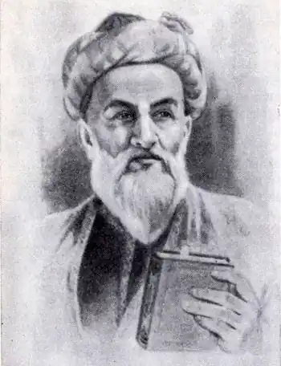
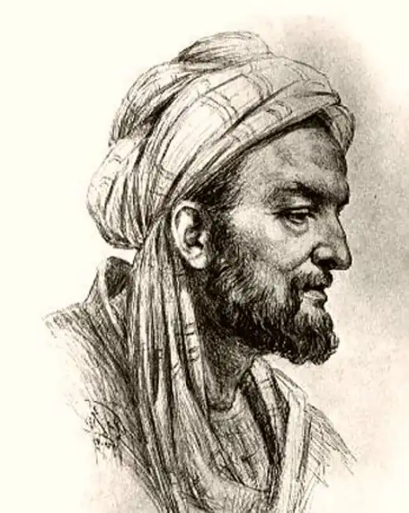

")
")


Авіценна (Ібн Сіна) був одним із найвидатніших філософів "золотого століття" ісламу.
Дитинство та ранні роки
Про ранні роки життя Авіценни відомо небагато. Про нього до нас дійшла лише мізерна інформація з автобіографічного праці його учня Джузьяни. І, оскільки інших свідоцтв не існує, всі описи життя Авіценни ґрунтуються на цій автобіографії. Згідно їй, Авіценна народився близько 980 р. н. е. в Афсане, селі неподалік від Бухари, в сім'ї Сетарег і Абдулли. Мати його була уродженкою Бухари, батько ж, шанований исмаилистский вчений, походив з р. Балх в Афганістані. Коли в родині з'явився Авіценна, батько його був управителем в одному з маєтків Мансура ібн Нуха з династії Саманідів. Жадібний до знань, Авіценна володів неабияким розумом і здібностями до наук. До десяти років він знав напам'ять Коран, а до чотирнадцяти перевершував свого вчителя за елементарною логікою. Хлопчик шукав нові знання, де і в кого тільки міг. Індійської арифметиці він навчається у індуса-торговця, а пізніше поглиблює свої знання з цього предмета з допомогою бродячого філософа. Після цього Авіценна старанно займається самоосвітою, читаючи праці елліністичних авторів. Він також вивчає ісламську юриспруденцію і вчення ханафистской школи. І саме в цей час він стикається з труднощами розуміння роботи Аристотеля з метафізики. Хлопець вчить працю напам'ять, але справжній зміст його так і залишається незрозумілим, поки, в один прекрасний день, до Авіценні не приходить осяяння. Трудовий шлях У віці шістнадцяти років Авіценна зосереджує свої зусилля на медицині. Цей предмет він вивчає не тільки теоретично, але і активно займається практикою. Йому вдається виявити нові шляхи в лікуванні хворих. За його словами, медицина куди простіше, ніж метафізика і математика. У Бухарі з Авиценной відбувається цікавий випадок, коли він виліковує припадок султана, в той час як це виявилося не під силу всім придворним лікарям. Авіценна ж з легкістю справляється з невідомої, але небезпечною хворобою. За його успіхи в медицині і вдале лікування еміра, Авіценні дають доступ до бібліотеки династії Саманідів. Бібліотека відкриває перед ним двері в дивовижний світ наук і філософії, надаючи в його розпорядження праці видатних вчених і класиків. Але триває це недовго: вороги династії спалюють бібліотеку дотла, звинувачуючи в цьому трагічну подію Авіценну. Вражений такою поведінкою своїх недругів, Авіценна залишає науку і допомагає своєму батькові на терені ведення господарства. Писати Авіценна починає в 21 рік. Його численні ранні роботи присвячені питанням логіки, етики, метафізики та ін. Праці, в основному, були написані арабською та перською мовами. Після смерті батька й падіння династії Саманідів у 1004 р., йому пропонують посаду при дворі Махмуда з Газні. Але це пропозицію Авіценна не приймає, а замість цього відправляється на захід, Ургенч – місто на території сучасного Туркменистану. Там він за копійки працює у місцевого візира. Але грошей на життя не вистачає, і Авіценна перебирається з одного місця на інше, від Нішапура до Мерва і до самих кордонів Хорасана. Эффективное средство для роста волос 100%! Домашнее копеечное средство...Читать далее " Після нескінченних мандрів, він, нарешті, зустрічає в Гордане, біля Каспійського моря, друга, який пускає його в свій будинок і пропонує взяти учнів, щоб навчати їх логікою і астрономії. Найвідоміші роботи Авіценни будуть написані саме в Гордане. З цим місцем пов'язаний і один з самих значущих його праць, "Канон лікарської науки". Праця цей складається з п'яти томів, кожен з яких присвячено окремим предметам. Авіценна приділяє увагу всьому, від інфекційних захворювань до венеричних. Перший і другий томи книги присвячені фізіології, патології і гігієни, третій і четвертий – лікування захворювань, а у п'ятому томі описано склад і способи приготування ліків. Здобувши собі славу своїми працями, Авіценна, нарешті, осідає в Рай – місті неподалік від сучасного Тегерана. Номінальним правителем цих місць є Маджд Аддаула, син останнього аміра династії Бувайхид, а той час як фактично всім у державі заправляє його матір, Сейеде Хатун. Тут Авіценна закінчить близько трьох десятків своїх праць. Однак його перебування в цих місцях незабаром підходить до кінця, з-за сварки між Мадждом Аддаулой і Шамсом аль-Даулой (його молодшим братом). Якийсь час Авіценна проводить в Казвіні, але після відправляється на південь в Хамадан, яким править Шамс аль-Даула. Там він стає фельдшером, дослужившись з часом до звання візира. Однак у Авіценни виникають розбіжності з місцевим еміром, і той віддає наказ вигнати неугодного лекаря з провінції. Лише після епідемії, яка загрожувала життю багатьох, Авіценну відновлять у правах лікувати інших. Сорок днів свого вигнання лікар проводить в будинку шейха Ахмеда Фазеля. Після смерті еміра, Авіценна кидає пост візира і ховається в будинку місцевого аптекаря, де береться за написання нових праць. Він відправляє лист Абу Яфару, керуючому містом Исфаханом, маючи намір послужити на благо місцевих жителів. Проте це прохання обернеться серйозною війною між новим еміром Хамадана і правителями Ісфахана. Авіценну укладають у фортецю. Після закінчення війни, Авіценна знову повертається на службу до нового еміру Хамадана, але незабаром, змінивши зовнішність, збігає з провінції. Майже всю свою решту життя Авіценна проведе при дворі Мухаммада ібн Рустама Душманзияра, правителя династії Какуидов. Він стає придворним лікарем, і обіймає посаду головного радника з питань літератури і науки під час численних військових кампаній. Останні свої роки Авіценна присвячує вивченню літератури та філології. За всю свою життя Авіценна написав багато праць з філософії, науки, медицини, астрології, астрономії: "Kitab al-shif" ("Книга лікування"), "Kitab al-najat" ("Книга звільнення"), "Reslafieb alakam al-nojum", "Канон лікарської науки" та ін. Останні роки життя і смерть Останній період життя Авіценни затьмарює хронічна хвороба, яка з роками стає тільки гірше. Серце його зупинилося в червні 1037 р. в священний місяць Рамадан. На той момент йому виповнилося п'ятдесят вісім років. Поховали Авіценну в іранському місті Хамадан. Цікаві факти Цей перський філософ, представник "золотого століття" ісламу, написав книгу "Канон лікарської науки". Біографія Авіценни Коротко Діяльність Біологічні науки, Точні науки, Філософ Дата смерті 18 Червня 1037 Місце народження Іран, с. Афшана Повне ім'я: Абу Алі Хусейн ібн Абдуллах ібн аль-Хасан ібн Алі ібн Сіна